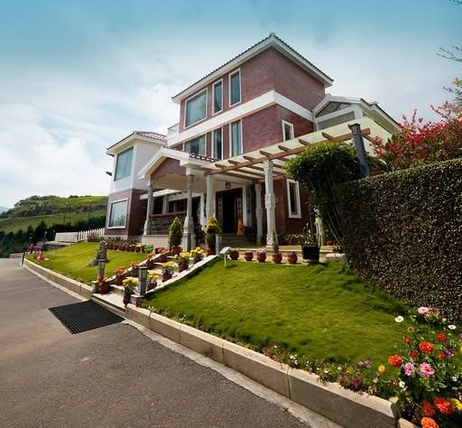
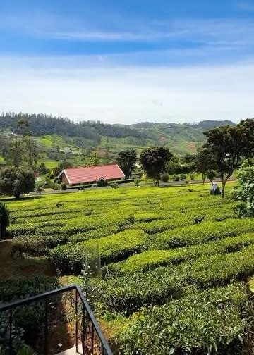

Immersed in nature, nestled in Ooty.
- Valley View Suites
- Wooden Villas
- Scenic Garden
Among the tea




Find us

Western Valley ResortsBygada Road, Yellakandi, Nanjanad, Ooty, Tamil Nadu 643004
Coming up from Mettupalayam? While the Mettupalayam–Coonoor route is closed, take the Kotagiri road to Ooty.
Send your enquiry